Chapter 8 Continuing Education at Dawson
The department of Continuing at Education offers evening courses across many disciplines throughout the year. The purpose of this report is to give a broad overview of the demographics and sector-level metrics for students taking courses within Cont Ed.
8.1 Services
Herein, we look at the services offered by the Division of Continuing Education.
8.1.1 Continuing Education’s Growth over Time
How have each of the departments increased their ContEd offerings over time?
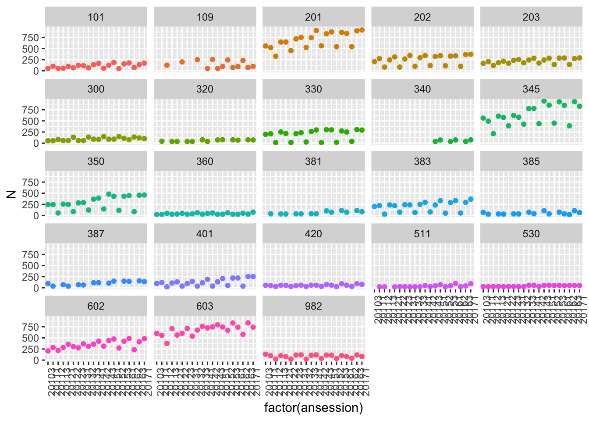
8.1.2 Department Level Seat Distributions
Which parts of Continuing Education are the most important in 2016?

8.1.3 Course Level distributions
If we look at the three most important departments (Math,Humanities and English) in 2016, how are the seats distrinuted across courses?
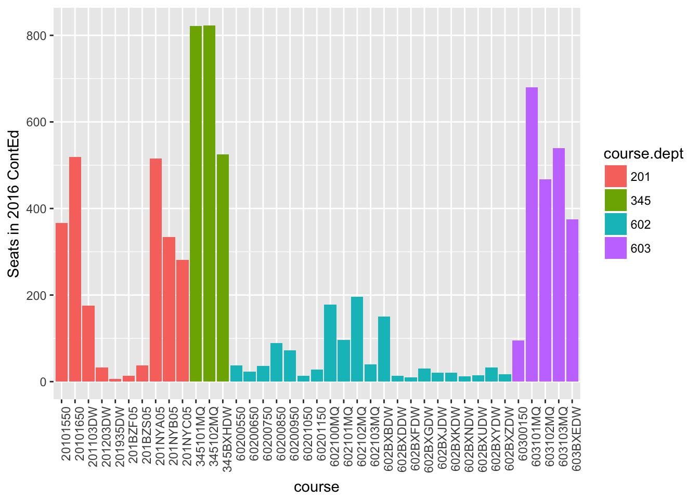
8.1.4 Specialized spaces
If we look at the departments that require specialized spaces (i.e. labs), in 2016, how are the seats distributed by course? - Has this evolved over time? - What are the seasonal variations?
8.1.4.1 Winter
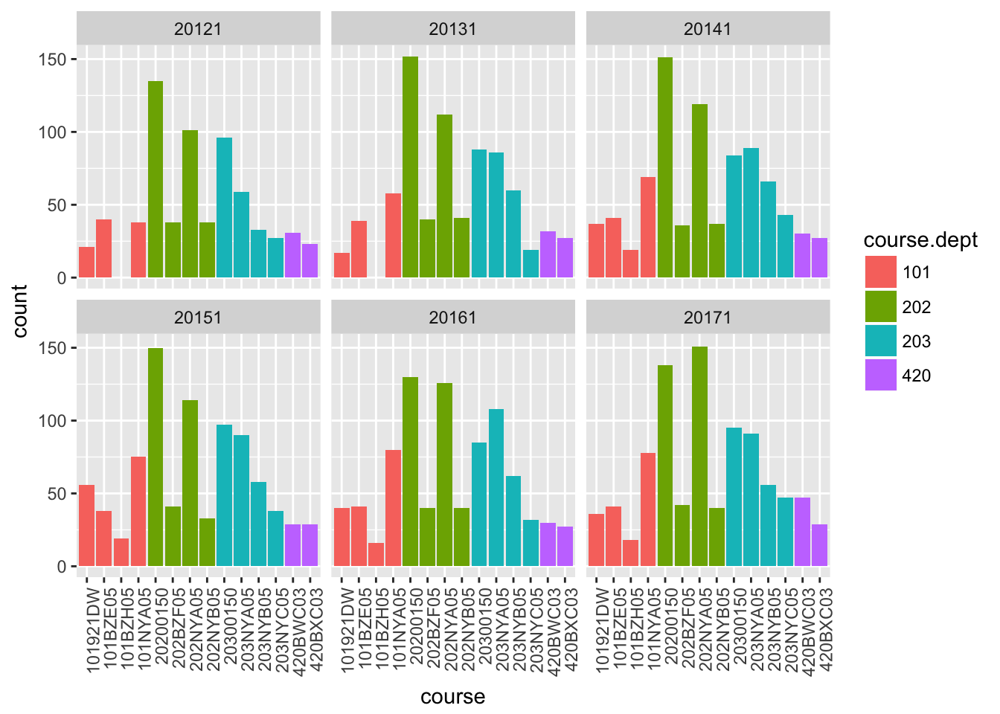
8.1.4.2 Fall
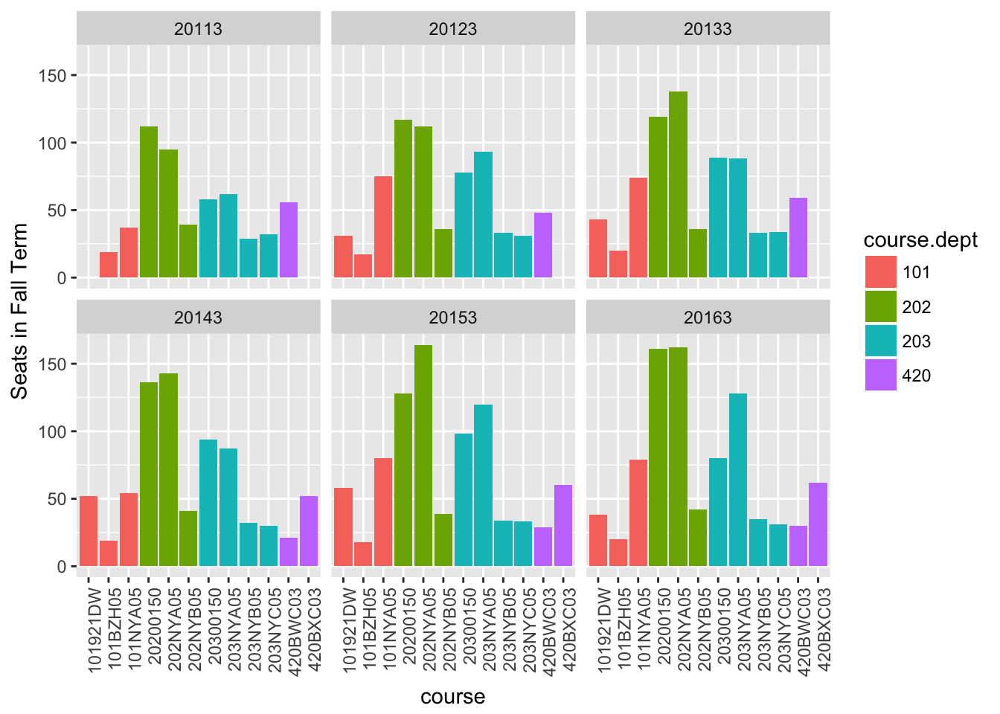
8.1.4.3 Summer
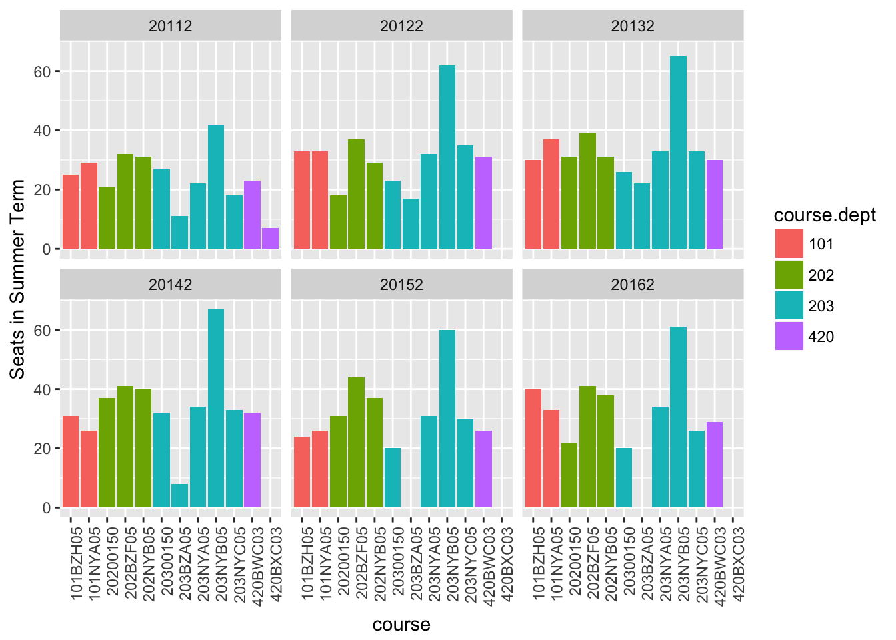
8.2 Students
8.2.1 Demographics
Who are the students using continuing education services?
- are there gender differences?
- are there age differences?
- do these demographics change over time?
- are there seasonal variations?
- are there differences in different departments?
8.2.1.1 Sexe
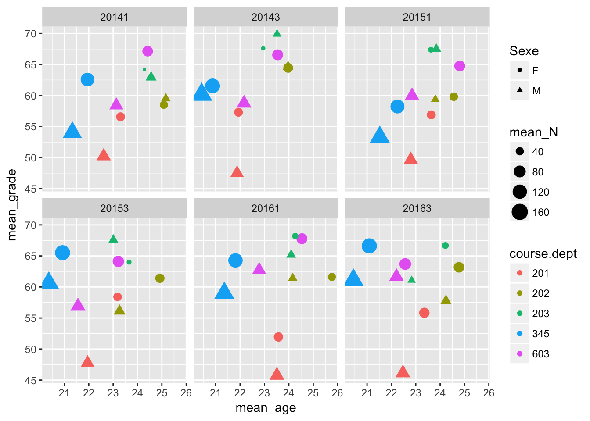
What is impact of condensed summer term?
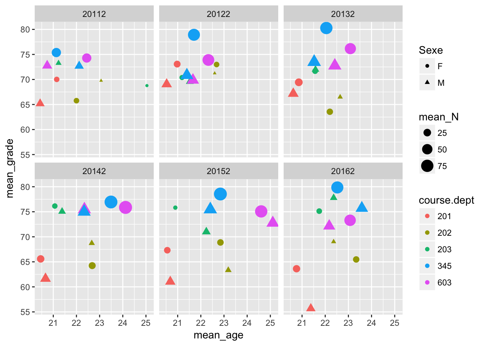
8.2.1.2 Birth Place
Now, instead of looking at effect of gender, we focus instead on Birth Place. To Quebec residents stand out in any consistent way, as compared to those born elsewhere?
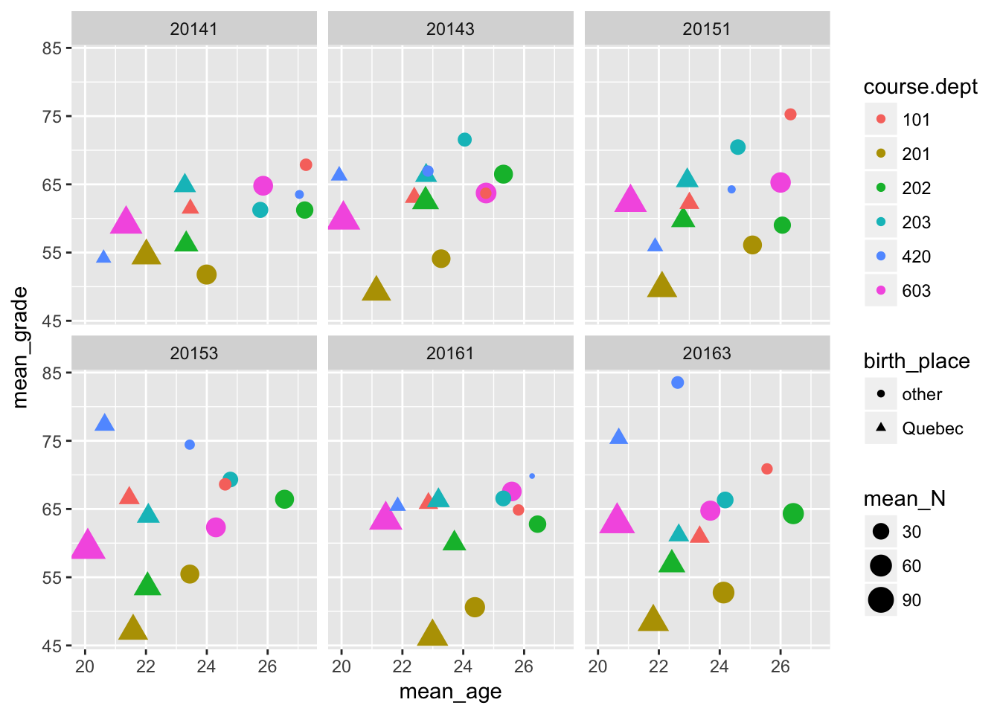
Again, what is impact of condensed summer term?
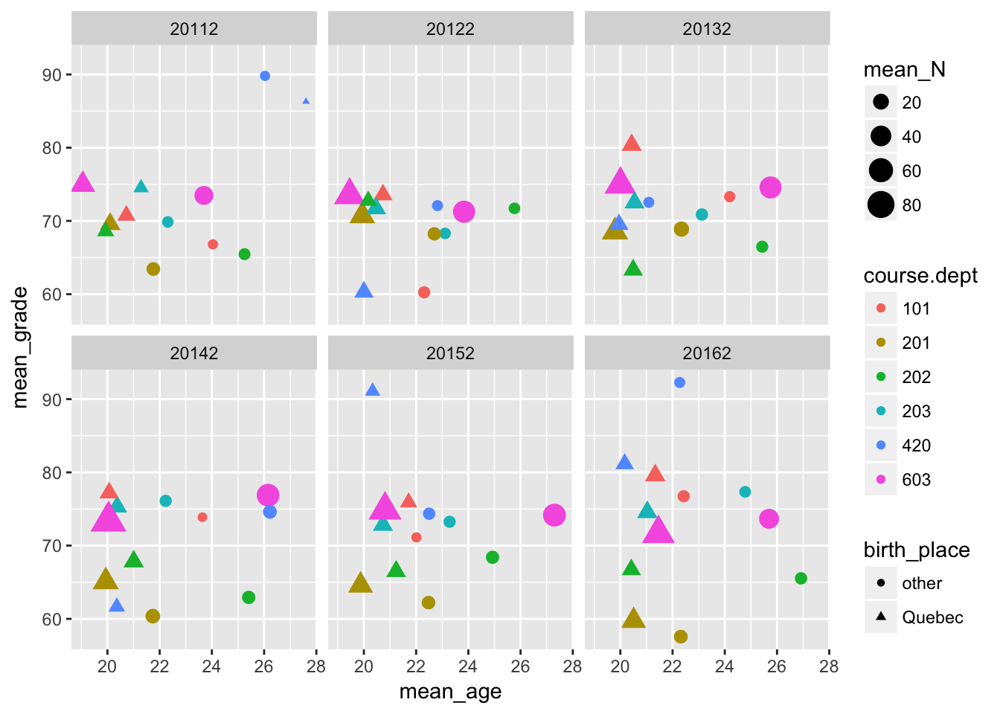
8.2.1.3 Mother Tongue
Finally we look at the possible impact of Mother Tongue. How do anglophones, francophones, and allophones compare in Continuing Education?
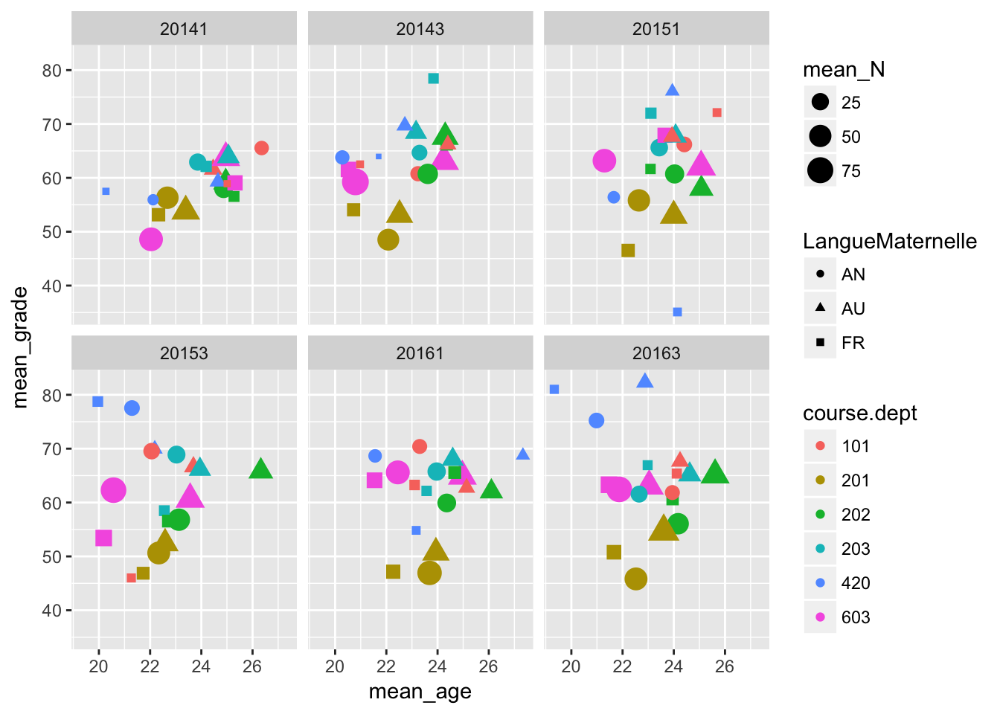
Again, what is impact of condensed summer term?
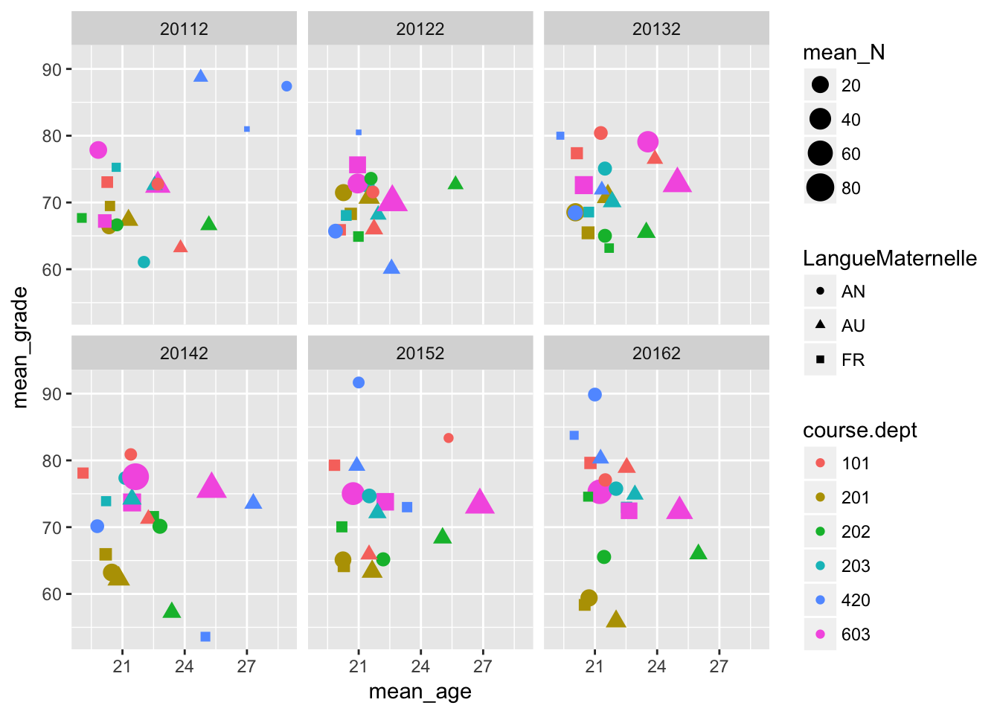
8.2.2 Success Rates
To come…